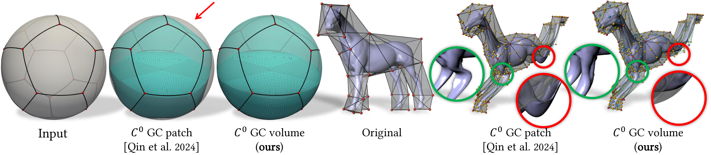
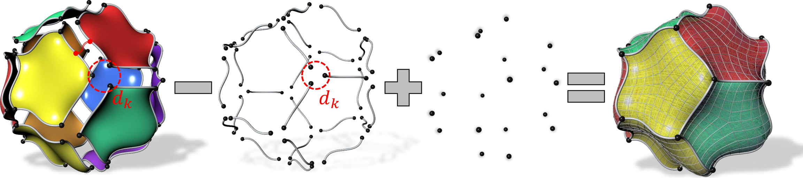
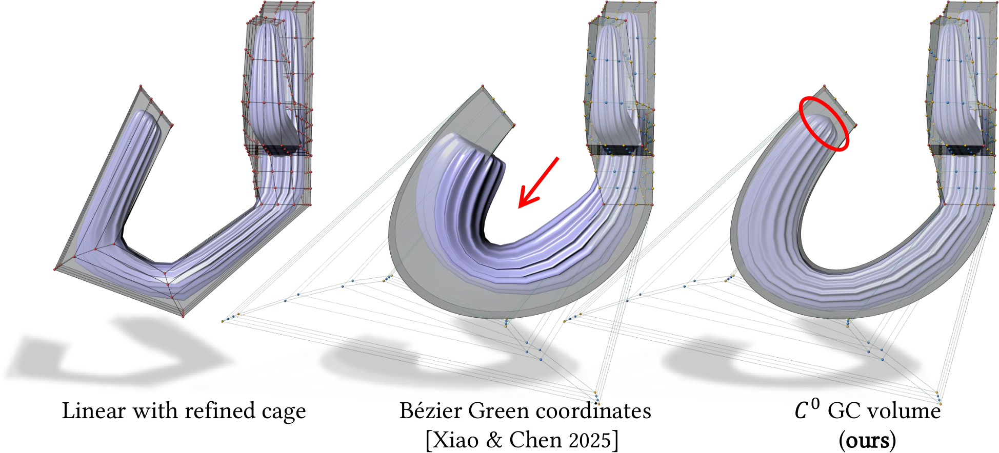
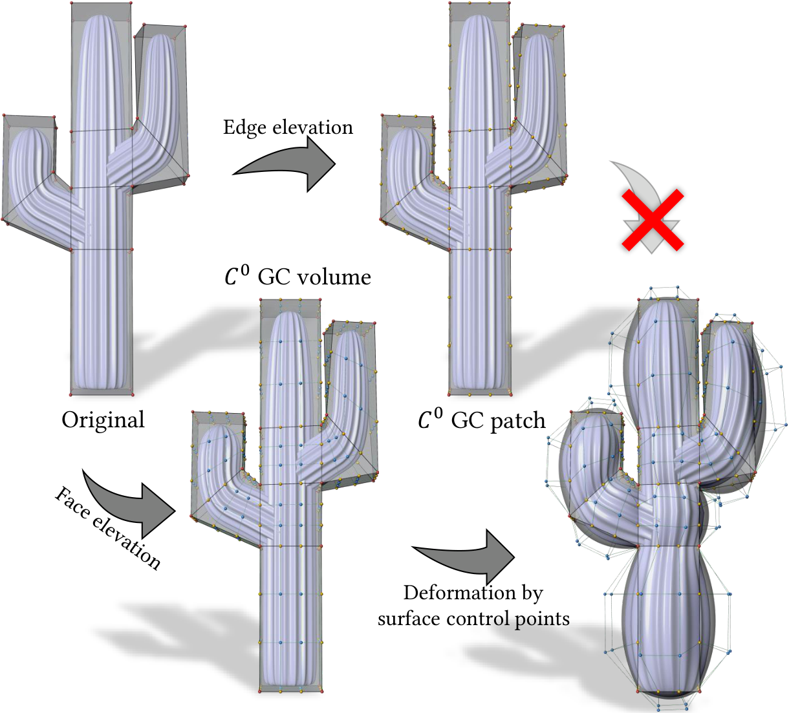
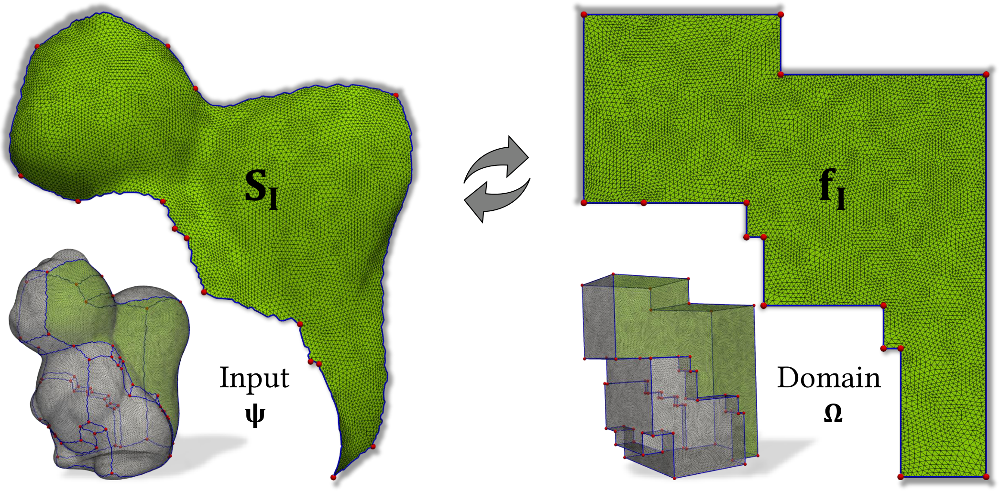
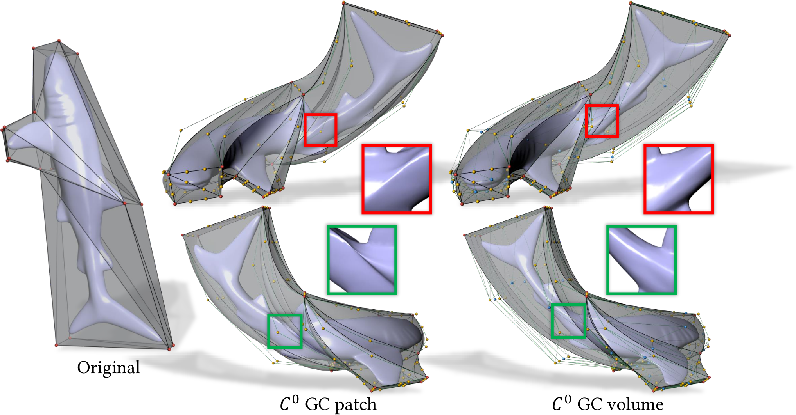
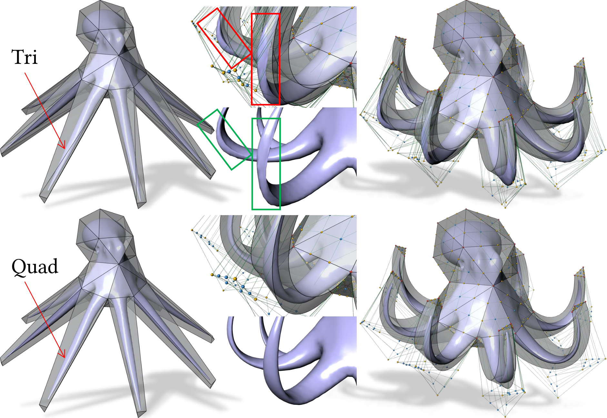
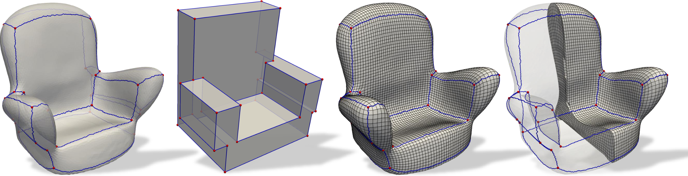
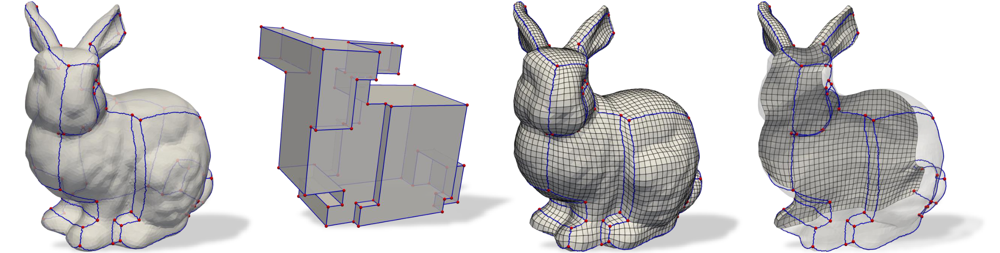
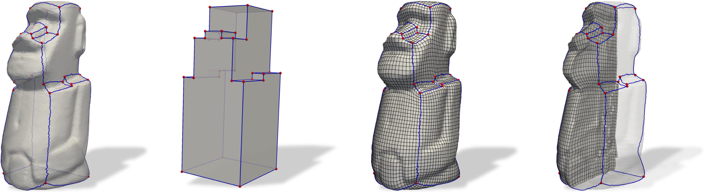

Generalization beyond hexahedra
The method extends Coons volumes from cube-like topology to arbitrary polyhedral domains, greatly broadening the geometric settings in which transfinite volumetric interpolation can be used.
A polyhedral generalization of Coons volumes for boundary-surface interpolation, high-order cage-based deformation, and PolyCube-based geometric modeling.

From sphere interpolation to high-order cage-based deformation, the generalized Coons volume extends transfinite interpolation beyond hexahedral topology.

Transfinite interpolation is a fundamental theme in geometric modeling. The most well-known transfinite interpolation volume is the Coons volume. However, the topology of Coons volumes is restricted to hexahedra, which significantly limits their applications. In this paper, we generalize the Coons volume from hexahedral topology to arbitrary polyhedral topologies via generalized barycentric coordinates. We prove that the proposed generalized Coons volume possesses several desirable geometric properties and demonstrate its applications in computer graphics.
A concise view of what this work adds to classical Coons constructions.
The method extends Coons volumes from cube-like topology to arbitrary polyhedral domains, greatly broadening the geometric settings in which transfinite volumetric interpolation can be used.
Instead of being restricted to boundary curves, the construction interpolates full boundary surfaces, enabling richer control and stronger geometric fidelity at the boundary.
The paper demonstrates practical value in sphere interpolation, 3D high-order cage-based deformation, and interpolation over PolyCubes.
The construction combines generalized barycentric coordinates with a surface-based Boolean-sum formulation to define C⁰ generalized Coons volumes over arbitrary polyhedra.

Use non-negative generalized barycentric coordinates as parameters, and blend boundary surface information in a way that preserves key interpolation properties while reducing to classical cases when the domain specializes.
The paper proves interpolation, reduction to the hexahedral Coons volume, reduction to the earlier C⁰ generalized Coons patch in the appropriate setting, and generalized barycentric reproduction.
By moving from edge-only to face-aware interpolation on polyhedral domains, the formulation supports more expressive geometric modeling and stronger control in downstream graphics tasks.
The paper evaluates the construction in several representative geometric modeling scenarios.

The proposed volume accurately represents spherical solids by interpolating boundary surfaces over several polyhedral domains. Compared with curve-only generalized Coons patches, the volume formulation captures the prescribed boundary surfaces directly.
Because the generalized Coons volume supports face-based control rather than edge-only control, it enables higher-order deformations with fewer distortions, fewer extrusion artifacts, and more stable alignment to the control cage.


By treating an input triangle mesh as boundary surface data and a corresponding PolyCube as the parameter domain, the method constructs interpolating volumes even for complex polyhedral topologies, including concave cases and domains with holes.
Selected visual results from the paper.





The final BibTeX entry can be updated once the official publication metadata is available.
@article{qin2026gcvolume,
title = {C⁰ Generalized Coons Volumes over Arbitrary Polyhedra},
author = {Kaikai Qin and Zeqi Ge and Péter Salvi and Chenhao Ying and
Huibiao Wen and Kepeng Xu and Shiqing Xin and Chongyang Deng},
journal = {To appear},
year = {2026}
}